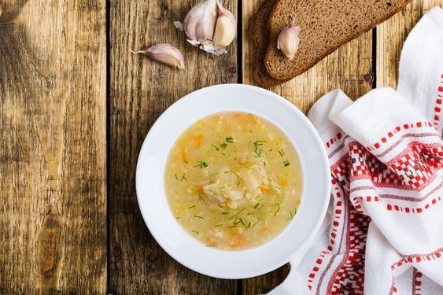

Welcome to the official site full of great recipes from Jurgita
Recipe 1 - Schi (4 portions)

Ingredients:
- 1 large potatoe: peeled and cubed
- 2-3 carrots: peeled and grated (coarse)
- 500 g of sauerkraut
- Knorr pot: vegetable and chicken (one each)
- 1.5 L boiling water
- Salt,pepper (pepper corns), 1-2 bay leaves
- Finely chopped garlic to serve
Actions to get there:
- Boil the water, add Knorr pots, bay leaves and pepper. Make sure the pots dissolve completely.
- Add potatoes and carrots, bring to the boil, cook 7-10 min.
- Add souerkraut with the broth, mix well, bring to the boil. Reduce the heat, cover half way pan. Simmer for 30 min
- Top up with boiling water if needed.